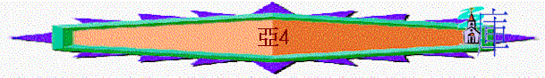

|
耶和華心�媟巨鉹齞� |
|||
|
為選民犯罪而大發烈怒 |
為重建錫安而極其火熱 |
為復興錫安而極其火熱 |
為彌賽亞國而親自成就 |
|
1:2-6 |
1:7-6:15 |
7-8 |
9-14 |
5.第5異象----金燈臺與橄欖樹----聖殿必成(4)
A.金燈臺的預表(4:1-10)
a.異象
「那與我說話的天使又來叫醒我，好像人睡覺被喚醒一樣。他問我說：「你看見了什麼？」我說：「我看見了一個純金的燈臺，頂上有盞燈，燈臺上有七盞燈，每盞有七個管子。旁邊有兩棵橄欖樹，一棵在燈盞的右邊，一棵在燈盞的左邊。」我問與我說話的天使說：「主啊，這是什麼意思？」」4:1-4
∼「好像人睡覺被喚醒一樣」既然是好人像即先知不是睡了，可能只是在思索一些事（可能是之前的異象），忽然被天使喚醒來
〜先知見到用純金的燈臺，此燈臺和原先聖殿的金燈有相同地方，都是用純金造，有七盞燈在同一燈臺；同用橄欖油發光。
〜但不同的是此燈臺左右各有一棵橄欖樹，燈油似乎直接由橄欖樹滴出經旁金嘴輸送至燈盞（盛油的儲器），然後流至管子的燈芯處。
b.解釋
(1)靠神的靈方能成事
「與我說話的天使回答我說：「你不知道這是什麼意思嗎？」我說：「主啊，我不知道。」他對我說：「這是耶和華指示所羅巴伯的。萬軍之耶和華說：不是倚靠勢力，不是倚靠才能，乃是倚靠我的靈方能成事。」4:5-6
(A)令人聯想起聖殿
〜只有聖殿才會有金燈臺，但人的勢力已阻止了建殿，怎能使燈臺放在殿內。
(B)令人聯想起昔日的金燈臺
「摩西對以色列人說：「猶大支派中，戶珥的孫子、烏利的兒子比撒列，耶和華已經提他的名召他，又以神的靈充滿了他，使他有智慧、聰明、知識，能做各樣的工，」出35:30-31
〜昔日的聖物是由比撒列所做的，他如何能造出山上的樣式，不是靠他的才能，乃是神的靈充滿他，使他有能力及智慧。
〜而燈臺的油在新約中代表聖靈。
(C)現今的聖殿也靠神的靈能成事
〜選民現在懼怕的是仇敵的勢力，他們也可能怕自己沒有才能建殿，但神提醒他們，靠神的靈就能成就
(2)殿工程必定完成
〜神的靈可成就甚麼事情
(A)衝破一切的困難
「大山哪，你算什麼呢？在所羅巴伯面前，你必成為平地。他必搬出一塊石頭，安在殿頂上。人且大聲歡呼說：『願恩惠恩惠歸與這殿（殿：或作石）！』」4:7
〜大山可能代表在建殿過程中的障礙。
(B)最後石塊被安上
〜「一塊石頭」原文作「頭塊石頭」，是建殿的最後一塊石，代表完工
(C)所羅巴伯必完工
「耶和華的話又臨到我說：「所羅巴伯的手立了這殿的根基，他的手也必完成這工，你就知道萬軍之耶和華差遣我到你們這裡來了。」4:8-9
〜所羅巴伯是猶大的省長，他必會立起殿的根基，神的「七眼」也看到他的工作(如拿綫鉈校正石塊的位置)
B.橄欖樹的代表
「我二次問他說：「這兩根橄欖枝在兩個流出金色油的金嘴旁邊是什麼意思？」他對我說：「你不知道這是什麼意思嗎？」我說：「主啊，我不知道。」他說：「這是兩個受膏者站在普天下主的旁邊。」」4:12-14
a.神用兩受膏者
〜燈臺可以作照亮的工作，完全靠橄欖樹及它滴下的油。
〜而所羅巴伯和約書亞如受膏者，被神分別及使用，完成建殿的工作。
b.神在他們中間
〜而金嬁臺也代表神自己，神在所羅巴伯和約書亞中間，他們可以剛強為神作工！